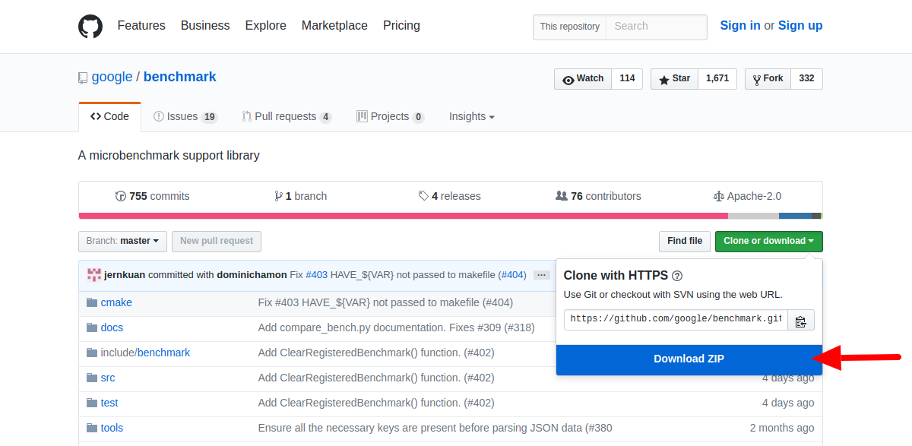

Installing 'Google Benchmark' library on Linux from source code
In this tutorial we will look at how to compile and install Google's benchmark library on Linux system from source code.
Step 1 : Downloading source code
This can be done in two ways.
1. Directly download the zip file containing source code of library from web URL:
https://github.com/google/benchmark/archive/master.zip
2. Clone the repository with your preferred Git/SVN client using repositories web URL:
https://github.com/google/benchmark.git
I prefer downloading zip, as currently I am not contributing in development of library and just want to try it out for my projects.
Step 2 : Building / Compiling source code
After zip is downloaded, we have to extract it using unzip command.
This will create benchmark-master directory containing actual source code of library. Goto benchmark-master directory using following command:
'benchmark' library uses CMake to manage its build process, so before starting build we first must generate Makefile using cmake.
Following are the commands to generate a Makefile.
cd build
cmake .. -DCMAKE_BUILD_TYPE=Release -DCMAKE_INSTALL_PREFIX=/opt/toolchain/google_benchmark_v1.1.0
Above commands create a build directory (you can give it any name you want) in benchmark-master directory which contain the source code. Goto build directory and execute cmake command with given options.
In the last command
".." is the path to source code root folder (in this case the parent folder).
-DCMAKE_BUILD_TYPE is set to Release as our intention is to consume the library and not to debug it.
-DCMAKE_INSTALL_PREFIX option is custom install directory where our generated library will be installed. Without this option it will install into default system directories.
I prefer using specific install directory so that I can use/try multiple versions of library without disturbing existing system setup. Also uninstalling is as simple as deleting the directory.
After successful execution of above commands, Makefile is generated in current directory (i.e. inside build directory).
Now use make command to start compiling source code and generate the library.
Step 3 : Installing generated library
After compilation is successful, installing the library is very simple. Just give following command:
This will simply copy the generated library and required file to given installation location.
Step 4 : Cleanup
Finally, we have to delete the build folder as it is no longer needed. Fire following commands on terminal:
rm -rf build
We have completed installation part of library. In next tutorial we will look into how to use it to benchmark programs.